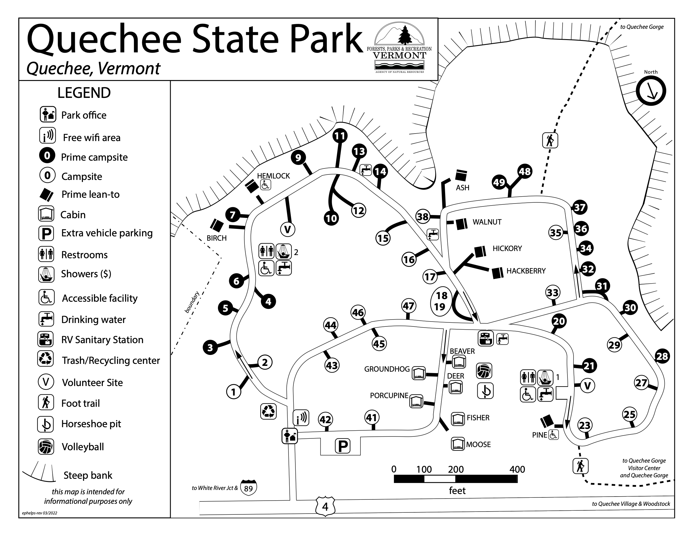

Home / Visit & Explore / Quechee State Park Map
Quechee State Park Map
Find your way around the park, the Gorge and the Hartford area.

Official map from Vermont Forests, Parks & Recreation. Tap the map to enlarge, or open the PDF. Intended for informational purposes only.
Tap a pin or trail for details and directions; zoom out to see the rest of the Hartford area. Trail and parking data © OpenStreetMap contributors, shown for orientation only.